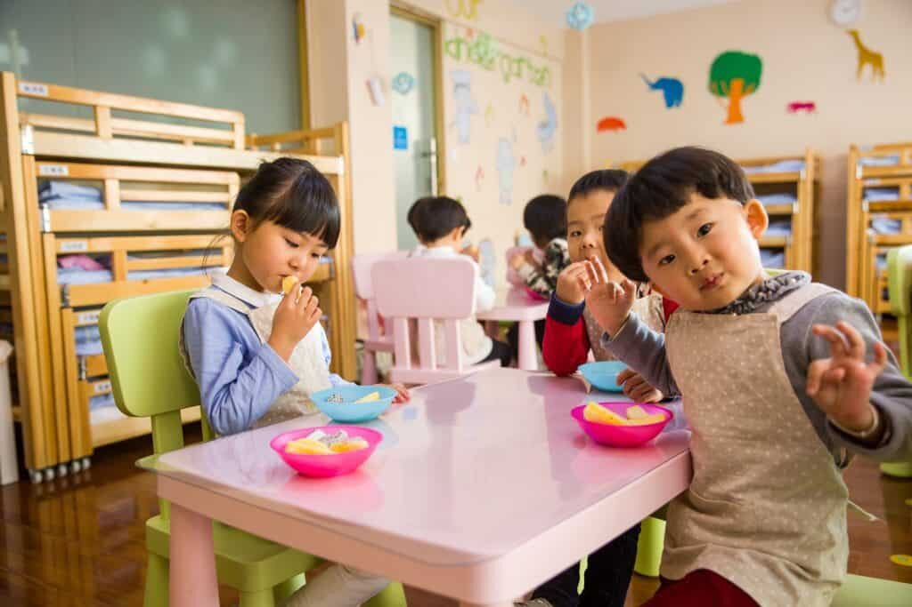

Cuando somos niños y niñas, estamos descubriendo el mundo, todo aquello que nos rodea, los sabores de la existencia. En este descubrir ellos y ellas se enfrentan a aquella inseguridad que les provoca lo desconocido, lo no explorado. Todo lo que ocurre es nuevo, es digno de asombro y una cautelosa observación. Estos momentos de poca seguridad son parte fundamental de su desarrollo, ya que les permite regular dicho proceso mediante las experiencias y oportunidades ofrecidas por los adultos significativos.
Frente a esta incertidumbre, necesitan vivenciar la seguridad por medio de acciones concretas y que respondan a sus necesidades. Una manera concreta de hacerlo, es mediante rutinas, reconociendo una estructura, un rito que se reitera en el tiempo para ser capaces de predecir, reconocer y sostener dichas acciones establecidas en conjunto y/o por los adultos/as responsables.
¿Qué es una rutina y un hábito?
Rutina: actividad que se realiza de manera regular y periódica como costumbre personal que puede desaparecer fácilmente. Ejemplo, guardar la chaqueta en el mismo lugar al llegar a casa.
Hábito: mecanismo estable que crea destrezas y habilidades. Modos de actuar que aprendemos o adquirimos para satisfacer nuestras rutinas.
Las rutinas, tanto a niños/as como adultos, nos permiten tomar consciencia sobre la responsabilidad de nuestros actos para conseguir algo, para lograr aquello necesario con nosotros mismos o para quienes nos interesan. El sostener una acción mediante el tiempo les permite aprender sobre la voluntad, la persistencia, la paciencia y así generar hábitos que favorezcan sus desarrollos.
Las rutinas permiten internalizar un hábito….una manera de vivir más responsable. En sus cerebros un hábito es una red de conexiones, un camino ya trazado.
Los hábitos son aprendizajes que se anclan en sus interiores y se automatizan para contribuir a la autonomía, orientación temporal, claridad y orden mental, seguridad, responsabilidad, constancia, motivación y mucho más.
¿Qué rutinas sanas podemos establecer?
- Establecer un momento durante el día para relajarse, eligiendo un lugar físico para ello y de qué manera se hará. (hábito del auto-cuidado)
- Definir cuál será el orden al levantarse: baño-desayuno o desayuno-baño. (hábito de higiene)
- Al levantarse tomar un vaso de agua para hidratarse. Lo mismo puede ser antes del almuerzo, de la cena o antes de ir a dormir. (hábito de alimentación)
- Al momento del almuerzo, hacerse cargo de recoger su plato y cubiertos. (hábito de socialización)
- Fijar ir al baño antes de dormir para evitar levantarse por la noche. (hábito de prevención)
- Que prepare su mochila el día anterior para ir a clases con todo lo necesario. (hábito de organización)
- Al despertar dar gracias por un nuevo día. (hábito de conciencia)
- Instaurar un momento del día para leer un cuento. (hábito de lectura)